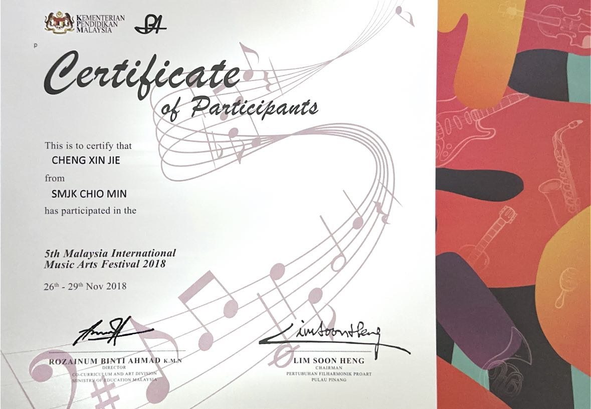
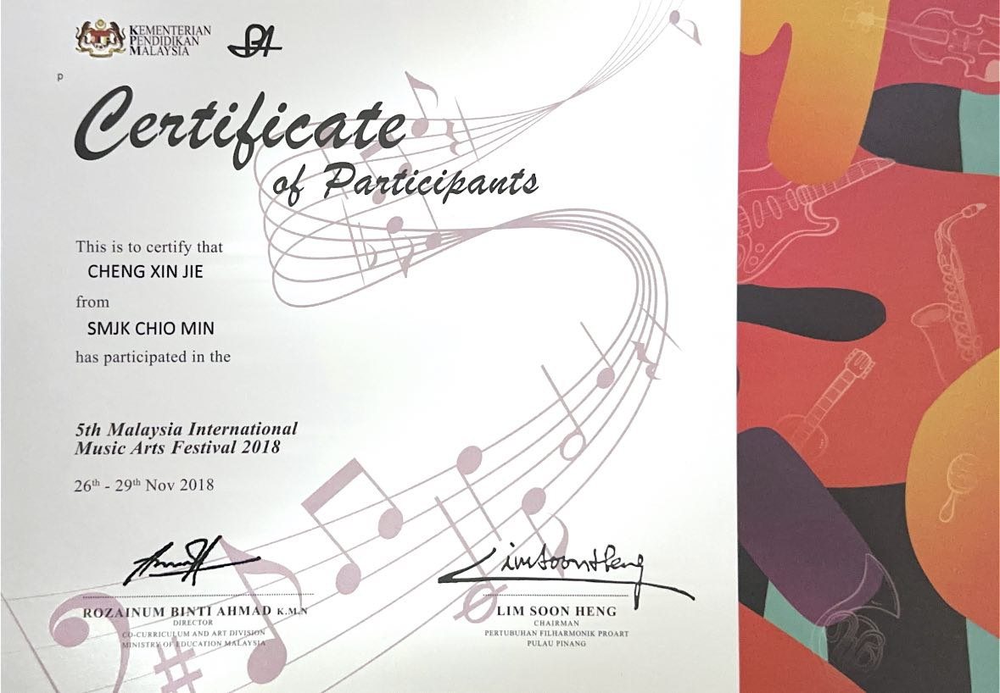

Vie d'Orchestre
Pendant mon lycée, j'ai fait partie d'un orchestre à vent où j'ai eu l'opportunité de découvrir et de jouer différents instruments.
Tout au long de l'année scolaire, j'ai joué du saxophone et me suis préparé pour les concerts et les concours.
Même si cela était parfois difficile, car il fallait des heures d'entraînement, je ne regrette rien car j'ai appris énormément de choses, pas seulement en musique !
Le concours MIMAF 2018
 

Les certificates obtenus
... augmente le sens de la responsabilité
Dans l'orchestre, chaque membre possède son propre instrument de musique et peut le prendre chez soi pour s'entrainer.
Cependant, il est de notre responsabilité de bien entretenir notre instrument pour qu'il reste en bon état de fonctionnement.
En tant que secrétaire d'orchestre, j'ai la responsabilité de m'occuper de certaines tâches.
Cela m'a également appris à être plus responsable.
... m'enseigne la discipline
Je me souviens qu'il est essentiel de pratiquer régulièrement et de travailler sur les parties les plus difficiles de la musique pour progresser.
Je dois être toujours prêt pour les répétitions, les concours ou les concerts.
En tant qu'étudiant, j'ai compris que j'avais besoin d'organiser mon temps efficacement pour pouvoir pratiquer régulièrement la musique tout en continuant mes études.
Cette discipline m'a également aidé dans d'autres domaines de ma vie, car j'ai appris à être plus responsable et à mieux gérer mes priorités.
... augmente la compétence du travail en équipe
Les compétences d’équipe sont importantes dans la vie, tant au niveau professionnel que personnel.
En tant que membre d'un orchestre, j'ai appris à coopérer avec les autres membres pour jouer la musique, organiser des concerts.
Jouer dans un orchestre m'a offert de nombreuses occasions d'améliorer mes compétences en travail d'équipe.
... développe mes compétences sociales
Faire partie d'un orchestre m'aide à ameliorer ma vie sociale.
J'ai rencontré plusieurs amis et c'est également là où je connais ma meilleure amie.
À mon avis, les plus belles amitiés se font lorsqu'on a quelque chose en commun.
Dans l'orchestre, on s'intéresse tous à la musique et on a tous le même objectif.
La vidéo de concours MIMAF 2016 et nous avons été récompensés par le Gold with Honour Award.